Chapter 25
Relational Databases
Chapter Goals
- To understand how relational databases store information
- To learn how to query a database with the Structured Query Language (SQL)
- To connect to databases with Java Database Connectivity (JDBC)
- To write database programs that insert, update, and query data in a relational
database
Organizing Database Information
- Relational database
- Stores information in tables
- Each table column has a name and data type
Product Table in a Relational Database
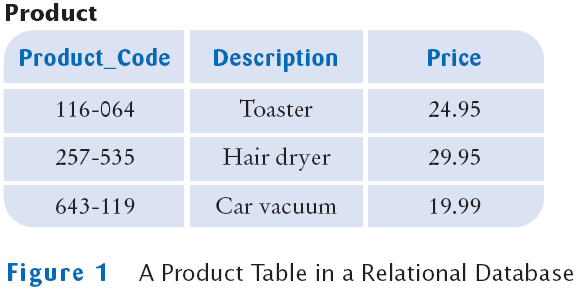
Product Table
- Each row corresponds to a product
- Column headers correspond to attributes of the product
- All items in the same column are the same data type
SQL
- SQL stands for Structured Query Language
- SQL is a command language for interacting with databases
- Most relational databases follow the SQL standard
- SQL is not case sensitive "create table" = "CREATE TABLE"
- We will use uppercase letters for SQL keywords and mixed case for table and column names
Some SQL Types and Their Corresponding Java Types
| SQL Data Type | Java Data Type |
|---|
| INTEGER or INT | int |
| REAL | float |
| DOUBLE | double |
| DECIMAL (m, n) | Fixed-point decimal numbers with m total digits and n digits after the decimal point; similar to BigDecimal. |
| BOOLEAN | boolean |
| CHARACTER (n) or CHAR (n) | Fixed-length string of length n; similar to String. |
SQL Command to Create a Table
CREATE TABLE Product
(
Product_Code CHAR(11),
Description CHAR(40),
Price DECIMAL(10, 2)
)
SQL Command to Add Data to a Database
SQL
- SQL uses single quotes ('), not double quotes, to delimit strings
- What if you have a string that contains a single quote?
- To remove an existing table use the DROP TABLE command
DROP TABLE Test
A Customer Table
A Customer Table
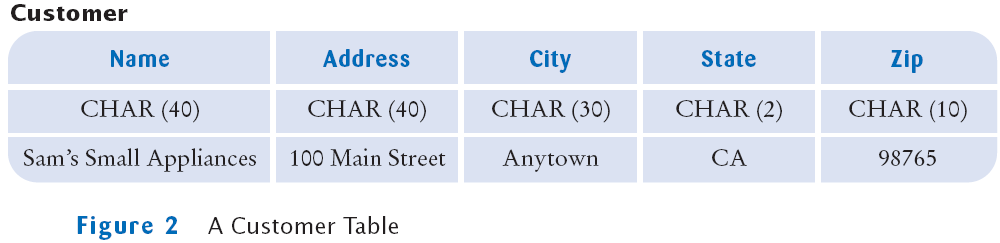
An Invoice Table
Poor Design for an Invoice Table with Replicated Customer Data
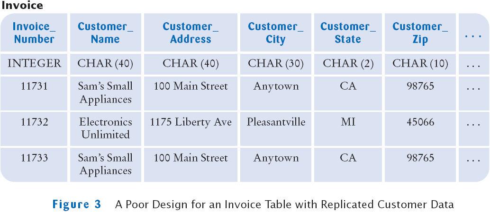
Linking Tables
- Replicating the same data in multiple rows has two problems
- It is wasteful to store the same information multiple times
- If the data needs to change it has to be changed in multiple places
- Instead you should distribute the data over multiple tables
Two Tables for Invoice and Customer Data
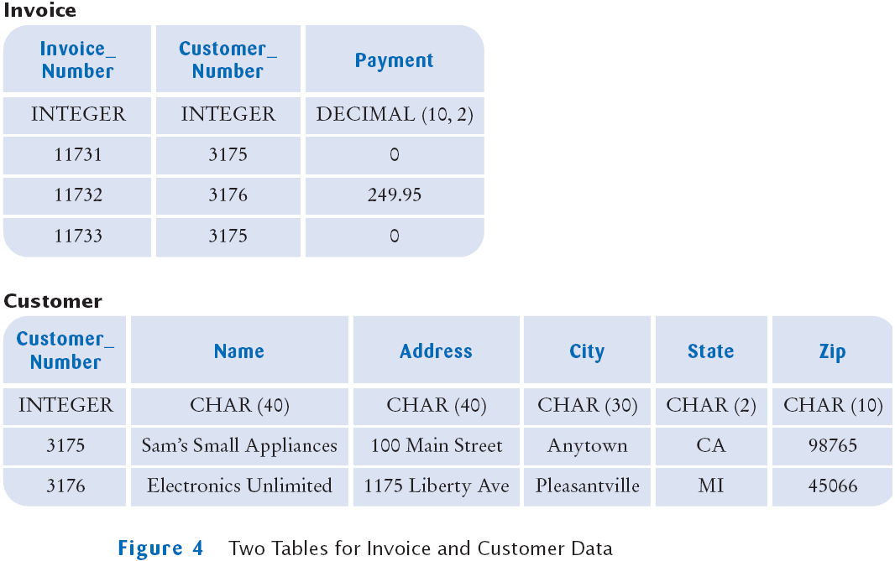
Linking Tables
- In the table above, customer data are not replicated
- Customer table contains a single record for each customer
- Invoice table has no customer data
- The two tables are linked by the Customer_Number field
- The customer number is a unique identifier
- We introduced the customer number because the customer name by itself may not be unique
Primary Keys
- Primary key is a column (or combination of columns) whose value uniquely
specifies a table record
- Not all database tables need a primary key
- You need a primary key if you want to establish a link from another table
- Foreign key is a reference to a primary key in a linked table
- Foreign keys need not be unique
Productivity Hint: Avoid Unnecessary Data Replication
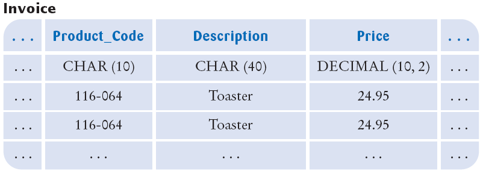
Implementing One-to-Many Relationships
- Each invoice may have many items
- Do not replicate columns, one for each item
- Do distribute the information in two tables, invoice and item
- Link each item to its invoice with an Invoice_Number foreign key in the
item table
Poor Design for Invoice Table with Replicated Columns
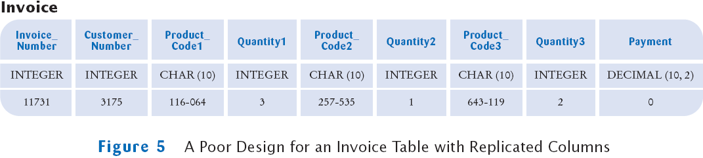
Linked Invoice and Item Tables
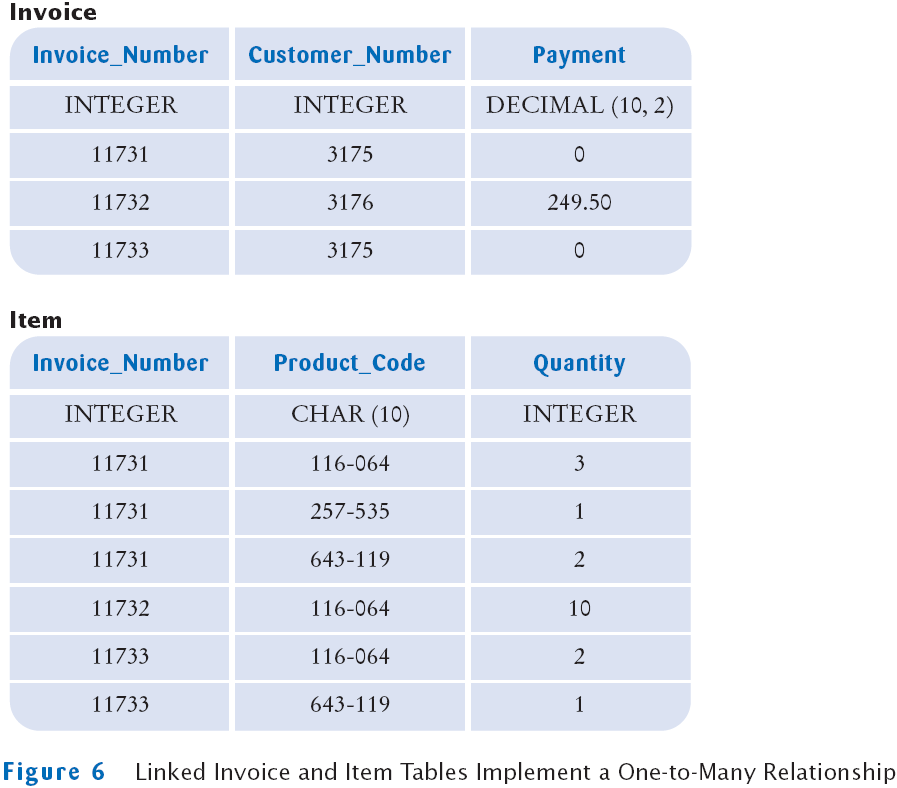
Sample Database
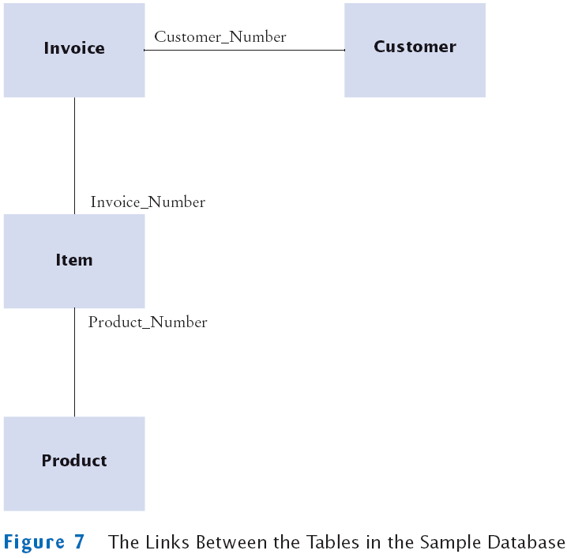
Self Check
- Would a telephone number be a good primary key for a customer table?
- In the database of Section 25.1.3, what are all the products that customer 3176 ordered?
Answers
- The telephone number for each customer is unique–a necessary requirement
for the primary key. However, if a customer moves and the telephone number
changes, both the primary and all foreign keys would need to be updated.
Therefore, a customer ID is a better choice.
- Customer 3176 ordered ten toasters.
Queries
- Once the database is constructed, we can query it for information
- What are the names and addresses of all customers?
- What are the names and addresses of all customers in California?
- What are the names and addresses of all customers who buy toasters?
- What are the names and addresses of all customers with unpaid invoices?
A Sample Database
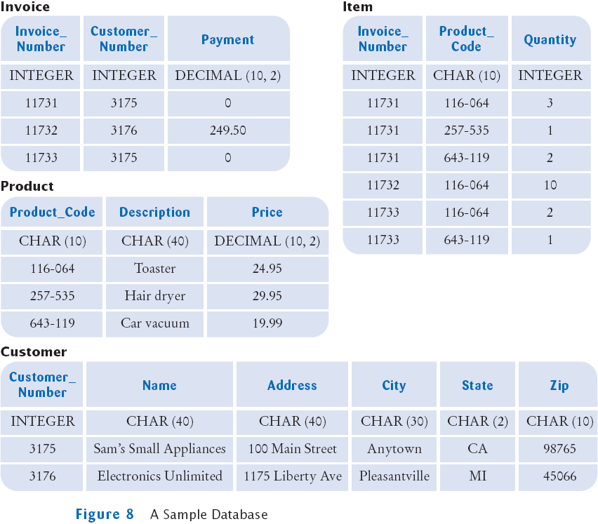
Simple Query
- Use the SQL SELECT statement to query a database
- The query to select all data from the Customer table:
SELECT * FROM customer
- The outcome of a query is a view:
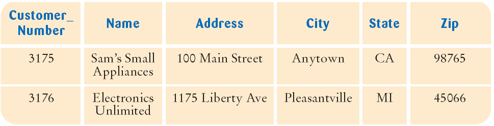
- A view is a "window" through which you can see some of the database
An Interactive SQL Tool
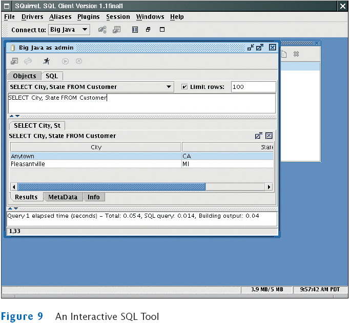
Selecting Columns
Selecting Subsets
Selecting Subsets
- You can match patterns with LIKE
- The right-hand side is a string that can contain special characters
- Special symbol _ matches exactly one character
- Special symbol % matches any character sequence
- The expression to match all Name strings whose second character is an "o":
Name LIKE '_o%'
Selecting Subsets
- You can combine expressions with logical connectives AND, OR, NOT
SELECT *
FROM Product
WHERE Price < 100
AND Description <> 'Toaster'
- You can select both row and column subsets
SELECT Name, City FROM Customer WHERE State = 'CA'
Calculations
Joins
Joins
- A query that involves multiple tables is a join
- When using a join, do these things
- List all tables that are involved in the query in the FROM clause
- Use the TableName.ColumnName syntax to refer to column names
- List all join conditions in the WHERE clause
(TableName1.ColumnName1 = TableName2.ColumnName2)
Joins
- You may want to know in what cities hair dryers are popular
- You need to add the Customer table to the query–it contains the customer addresses
- Customers are referenced by invoices, add that table as well:
SELECT Customer.City, Customer.State, Customer.Zip
FROM Product, Item, Invoice, Customer
WHERE Product.Description = 'Hair dryer'
AND Product.Product_Code = Item.Product_Code
AND Item.Invoice_Number = Invoice.Invoice_Number
AND Invoice.Customer_Number = Customer.Customer_Number
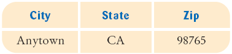
Joining Tables without Specifying a Link Condition
SELECT Invoice.Invoice_Number, Customer.Name
FROM Invoice, Customer
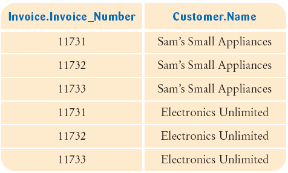
Joining Tables without Specifying a Link Condition
SELECT Invoice.Invoice_Number, Customer.Name
FROM Invoice, Customer
WHERE Invoice.Customer_Number = Customer.Customer_Number
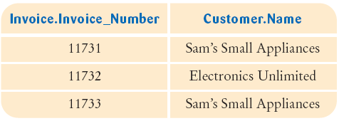
Updating and Deleting Data
Updating and Deleting Data
Self Check
- How do you query the names of all customers that are not from Alaska or Hawaii?
- How do you query all invoice numbers of all customers in Hawaii?
Answers
- SELECT Name FROM Customer WHERE State <> 'AK' AND State <> 'HI'
SELECT Invoice.Invoice_Number FROM Invoice, Customer
WHERE Invoice.Invoice_Number = Customer.Customer_Number
AND Customer.State = 'HI'
Databases and Privacy
Installing a Database
- A wide variety of database systems are available. Among them are
- High-performance commercial databases, such as Oracle, IBM DB2, or
- Microsoft SQL Server
- Open-source databases, such as PostgreSQL or MySQL
- Lightweight Java databases, such as McKoi and HSQLDB
- Desktop databases, such as Microsoft Access
Installing a Database
- Detailed instructions for installing a database vary widely
- General sequence of steps on how to install a database and test your installation:
- Obtain the database program
- Read the installation instructions
- Install the program (may even need to compile from source code)
- Start the database
- Set up user accounts
- Run a test:
CREATE TABLE Test (Name CHAR(20))
INSERT INTO Test VALUES ('Romeo')
SELECT * FROM Test
DROP TABLE Test
Note that you may need a special terminator for each SQL statement (e.g. ';')
JDBC
- JDBC: Java Database Connectivity
- You need a JDBC driver to access a database from a Java program
- Different databases require different drivers
- Drivers may be supplied by the database manufacturer or a third party
- When your Java program issues SQL commands,
the driver forwards them to the database and lets your program analyze the results
JDBC Architecture
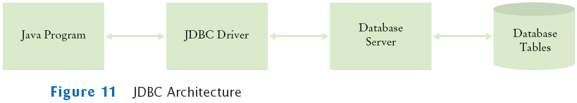
Testing the JDBC Driver
- Find the class path for the driver, e.g.
c:\mckoi\mkjdbc.jar
- Find the name of the driver class that you need to load, e.g.
com.mckoi.JDBCDriver
- Find the name of the database URL that your driver expects
jdbc:subprotocol:driver-specific data
jdbc:mckoi://localhost/
Testing the JDBC Driver
- Edit the file database.properties and supply
- The driver class name
- The database URL
- Your database user name
- Your database password
- Compile the program as
javac TestDB.java
- Run the program as
java -classpath driver_class_path;. TestDB database.properties
java -classpath driver_class_path:. TestDB database.properties
Testing the JDBC Driver: Possible Problems
- Missing driver
- Check the class path and the driver name
- Driver cannot connect to the database
- The database may not be started
- Database may not be reachable
- Failed login
- Check the database name, user name, and password
- A missing Test table
- Make sure you create and populate the table as described in the database test
File TestDB.java
File SimpleDataSource.java
File database.properties
Self Check
- After installing a database system, how can you test that it is properly installed?
- You are starting a Java database program to connect to the McKoi database and
get the following error message:
Exception in thread "main" java.lang.ClassNotFoundException:
com.mckoi.JDBCDriver
What is the most likely cause of this error?
Answers
- Connect to the database with a program that lets you execute SQL instructions.
Try creating a small database table, adding a record, and selecting all records.
Then drop the table again.
- You didn't set the class path correctly. The JAR file containing the JDBC driver
must be on the class path.
Database Programming in Java: Connecting to the Database
- Use a Connection object to access a database from a Java program
- Load the database driver
- Ask the DriverManager for a connection
- When you are done, close the database connection
String driver = . . .;
String url = . . .;
String username = . . .;
String password = . . .;
Class.forName(driver); // Load driver
Connection conn = DeviceManager.getConnection(url, username, password);
. . .
conn.close();
Connecting to the Database
Connecting to the Database
- The init method uses the Properties class to read the file
- Properties class has a load method to read a file of key/value pairs from
a stream
Properties props = new Properties();
FileInputStream in = new FileInputStream(fileName);
props.load(in);
- The getProperty method returns the value of a given key
String driver = props.getProperty("jdbc.driver");
- Now when you need a connection call
Connection conn = SimpleDataSource.getConnection();
- You need to close the connection by calling
conn.close();
Executing SQL Statements
- A Connection object can create Statement objects
Statement stat = conn.createStatement();
- The execute method of the Statement class executes a SQL
statement
stat.execute("CREATE TABLE Test (Name CHAR(20))");
stat.execute("INSERT INTO Test VALUES ('Romeo')");
- Use executeQuery method of the Statement class to issue a query
String query = "SELECT * FROM Test";
ResultSet result = stat.executeQuery(query);
- The result of a SQL query is returned in a ResultSet object
Executing SQL Statements
Executing SQL Statements
- If your statement has variable parts, use a PreparedStatement
String query = "SELECT * WHERE Account_Number = ?";
PreparedStatement stat = conn.prepareStatement(query);
- The ? symbols denote variables that you fill in when you make an actual query
- Call a set method to fill this variables
stat.setString(1, accountNumber);
- The first parameter the set methods denotes the variable position (1 is the first ?)
- There are also methods setInt and setDouble
- After setting all variables, call executeQuery or executeUpdate
Executing SQL Statements
Executing SQL Statements
- You can reuse a Statement or PreparedStatement object
- For each statement, you should only have one active ResultSet
- If you need to look at multiple result sets at the same time, create multiple
Statement objects
- Close the current ResultSet before issuing a new query on the same
statement
result.close();
- When you are done with a Statement object, close it
stat.close();
That will also close the ResultSet
Analyzing Query Results
Analyzing Query Results
Analyzing Query Results
- The other type of get method uses a string parameter for the column
name
String productCode = result.getString("Product_Code");
- Use getInt to fetch an integer column value
int quantity = result.getInt("Quantity");
- Use getDouble to fetch an double column value
double unitPrice = result.getDouble("Price");
Result Set Meta Data
Result Set Meta Data
Result Set Meta Data
File Product.sql
File ExecSQL.java
Self Check
- Suppose you want to test whether there are any customers in Hawaii. Issue the statement
ResultSet result = stat.executeQuery(
"SELECT * FROM Customer WHERE State = 'HI'");
Which Boolean expression answers your question?
- Suppose you want to know how many customers are in Hawaii. What is an efficient way to get this answer?
Answers
- result.hasNext(). If there is at least one result, then hasNext returns true.
ResultSet result = stat.executeQuery(
"SELECT COUNT(*) FROM Customer WHERE State = 'HI'");
result.next();
int count = result.getInt(1);
Note that the following alternative is significantly slower if there are many such
customers.
ResultSet result = stat.executeQuery(
"SELECT * FROM Customer WHERE State = 'HI'");
while (result.next()) count++; // Inefficient
Case Study: A Bank Database
- This is a reimplementation of the ATM simulation
- In the simulation each customer has:
- A customer number
- A PIN
- A checking account
- A savings account
- The data will be stored in two tables in a database
Tables for ATMSimulation
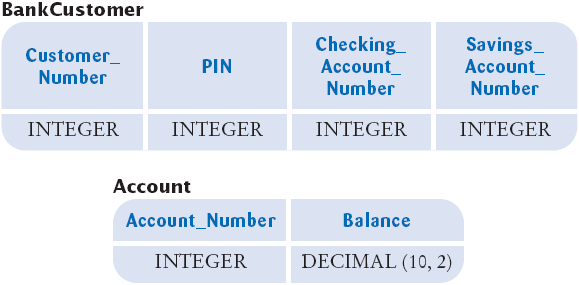
Case Study: A Bank Database
- The Bank class needs to connect to the database whenever it is
asked to find a customer
- Its findCustomer method
Case Study: A Bank Database
public Customer findCustomer(int customerNumber, int pin)
throws SQLException
{
Connection conn = SimpleDataSource.getConnection();
try
{
Customer c = null;
PreparedStatement stat = conn.prepareStatement(
"SELECT * FROM BankCustomer WHERE Customer_Number = ?");
stat.setInt(1, customerNumber);
ResultSet result = stat.executeQuery();
if (result.next() && pin == result.getInt("PIN"))
c = new Customer(customerNumber,
result.getInt("Checking_Account_Number"),
result.getInt("Savings_Account_Number"));
return c;
}
finally
{
conn.close();
}
}
Case Study: A Bank Database
- The BankAccount methods are different now
- The getBalance method gets the balance from the database
- The withdraw and deposit methods update the database immediately
Case Study: A Bank Database
public double getBalance()
throws SQLException
{
Connection conn = SimpleDataSource.getConnection();
try
{
double balance = 0
PreparedStatement stat = conn.prepareStatement(
"SELECT Balance FROM Account WHERE Account_Number = ?");
stat.setInt(1, accountNumber);
ResultSet result = stat.executeQuery();
if (result.next())
balance = result.getDouble(1);
return balance;
}
finally
{
conn.close();
}
}
Case Study: A Bank Database
public void deposit(double amount)
throws SQLException
{
Connection conn = SimpleDataSource.getConnection();
try
{
PreparedStatement stat = conn.prepareStatement(
"UPDATE Account"
+ " SET Balance = Balance + ?"
+ " WHERE Account_Number = ?");
stat.setDouble(1, amount);
stat.setInt(2, accountNumber);
stat.executeUpdate();
}
finally
{
conn.close();
}
}
File Bank.java
File BankAccount.java
Self Check
- Why doesn't the Bank class store an array of Customer objects?
- Why do the BankAccount methods throw an SQLException instead of catching it?
Answers
- The customer data are stored in the database. The Bank class is now merely a
conduit to the data.
- The methods are not equipped to handle the exception. What could they do?
Print an error report? To the console or a GUI window? In which language?